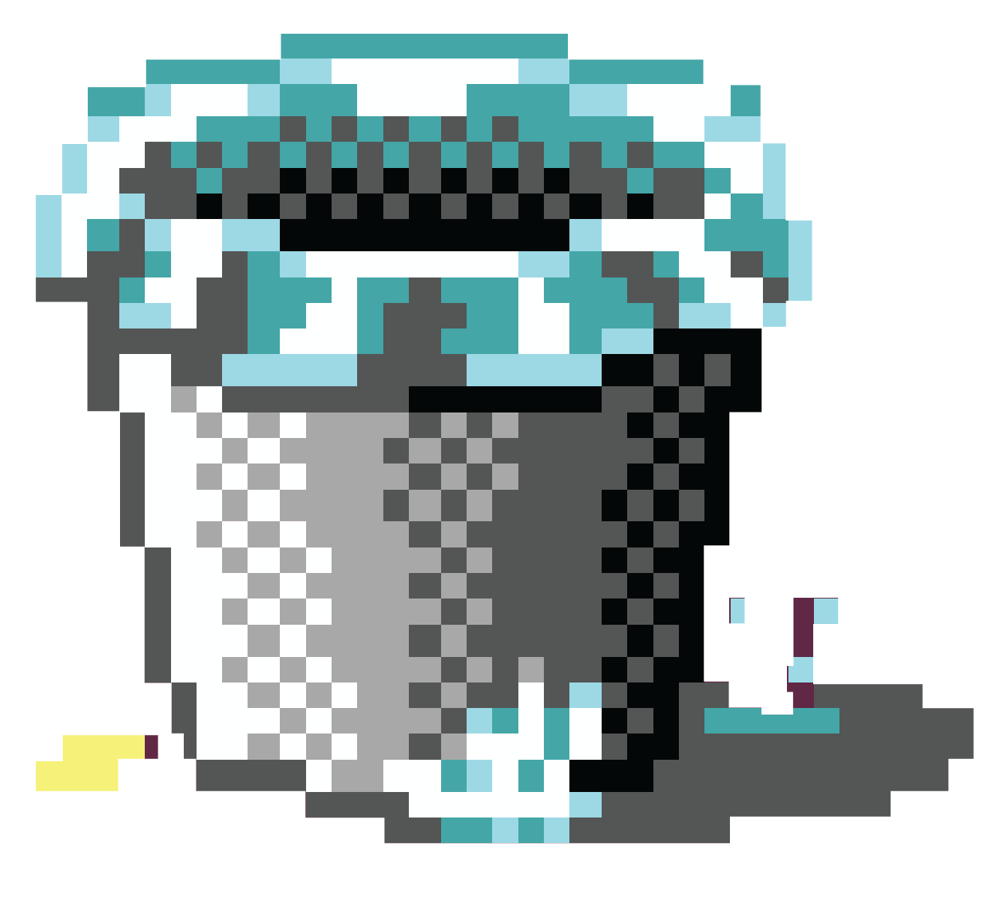
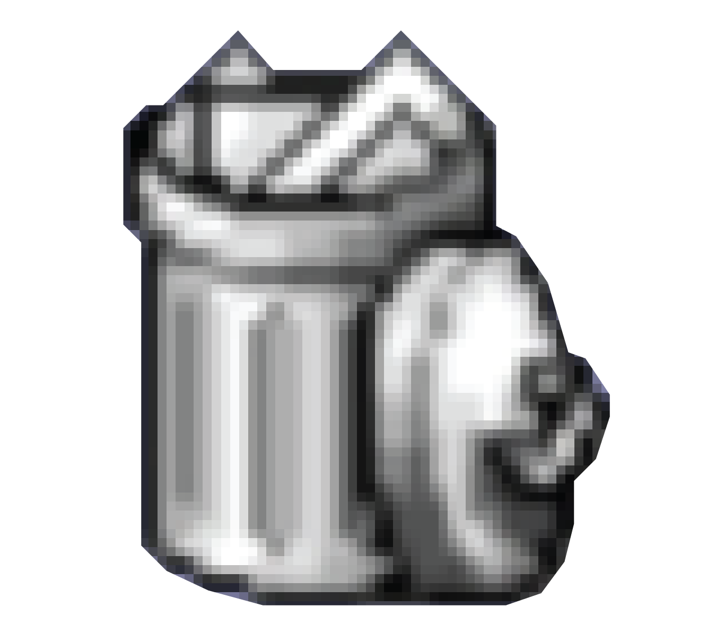
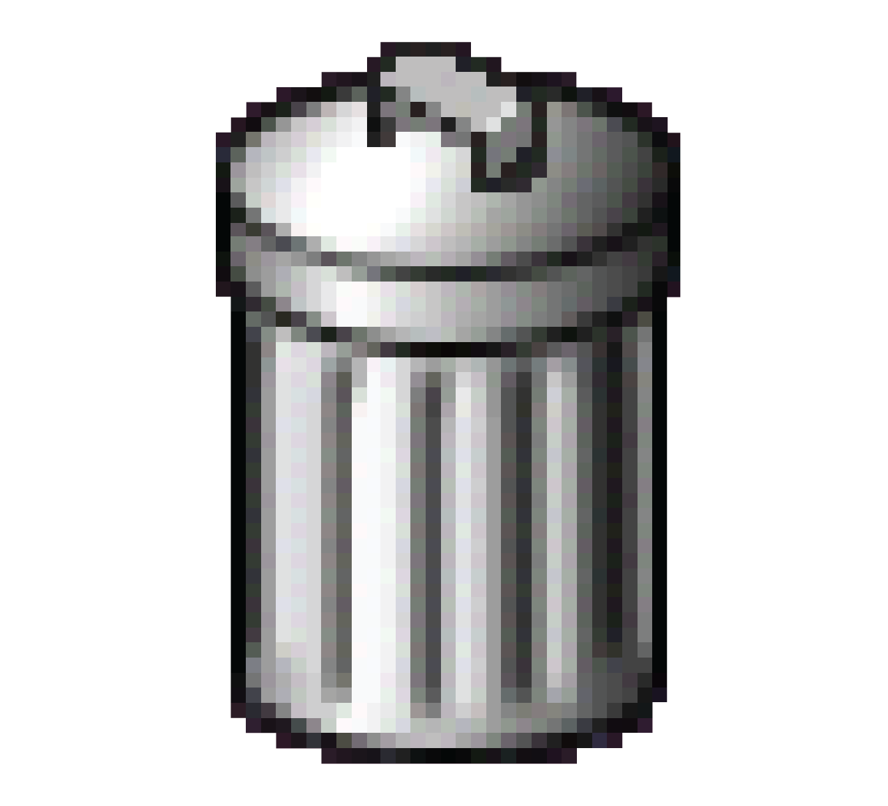

Trash Icon
In 1982, a
small waste container icon for deleting files was made
during the development of the Apple Lisa user interface. The concept
was carried over to many other programs and systems over the years and
it is still used regularly today by big companies. The early trash icons
used in computers during the 80s were made out of solid visible blocks
of pixels and had very simple designs.
Starting from the early 90s, the trash icons started to display a bit
more detail. They were still pixilated, but the icons were begining to reflect
what they look like in real life. Many designers tried to be creative with
using colors, altering shades and light, and 3D-ifying the trash.






Entering the 21st century, the styles of the icons finally became to be
the realistic icons that we mostly see today. The hyper realistic photo illustrative
icons were first seen on the Windows XP and the Mac OS X. The trend lasted for a few
years until in 2007, icons were suddenly jumping back to more of the lat simplistic
design that it originally came from. To this day, the minimalistic design icons are
being used on many programs and websites.